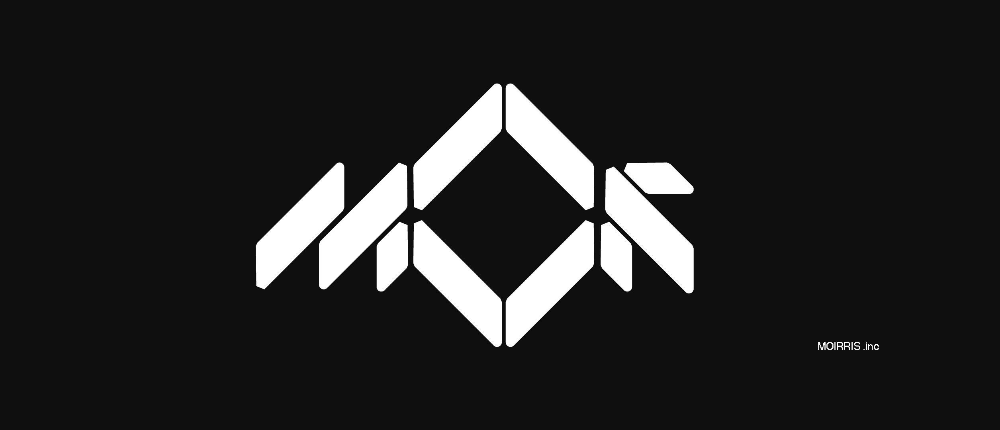
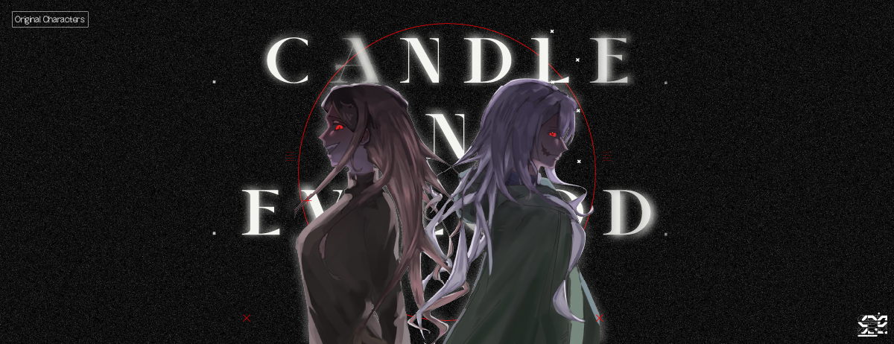
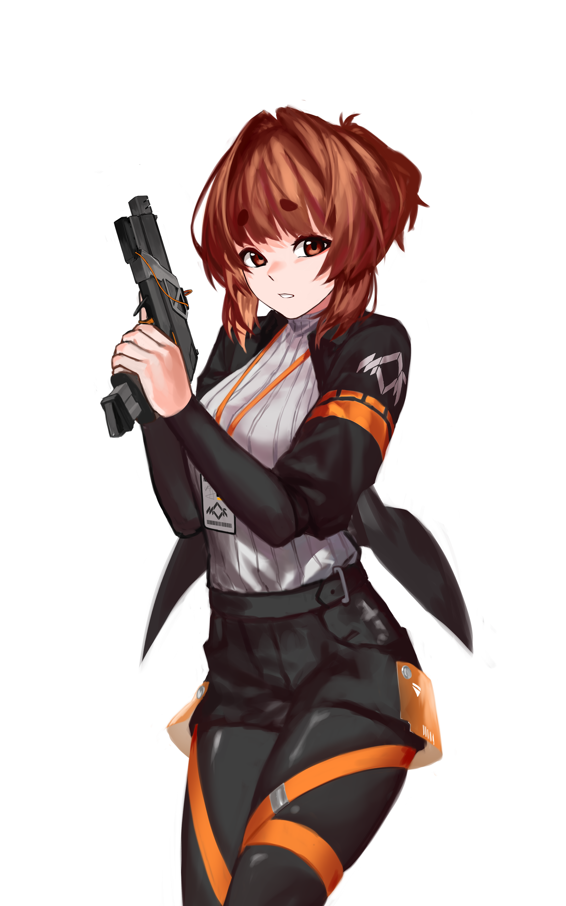

莫里斯公司
一家拿異常物品來賣錢的公司，也是故事發生的主舞台。

這是一個與現實社會稍微有一點差異的世界，但老實說也差不了多少——
《蠟燭與邪神》( Candle And Evilgod )的世界觀建立在一個以當前社會為基礎的架空世界下。
與我們所處的世界有所不同之處在於，這個世界觀有著通稱「異常事件」的現象。
所以，這個世界觀會發生類似這種事情：
————摘自《蠟燭與邪神》｜愚者 02
為此，一系列關於異常事件所衍生的系列故事、人物角色與各種拿來棄置作者多餘腦容量的設定就這麼誕生了。
——因為現實已經足夠瘋狂，只需要取其精華，去其糟粕……
此網頁為個人原創《蠟燭與邪神》的設定網站，含故事、劇情、設定等內容。
注意：本頁面含 R18G 內容，請斟酌觀看。
Factions
左右切換查看不同勢力
Characters
莫里斯公司
intro
前 CTA 員工，被同事陷害，遭到 CTA 追殺，瀕死之際被 CAE 無意間帶進公司。
膽小、容易慌張。會輕易相信別人說的話（通俗地說就是有點笨），某些情況下將有可怕的決斷力。
這、這裡是艾萊亞…… 請不要殺我……

Anomaly Events

Classification Reference
一個異常事件需經過「O.P.C.U」、「管理物質標籤」及「保密等級」的分類才可進行完整歸檔。 前者告知一線人員如何處置，中者告訴研究人員這類異常屬於何種類型，後者標示資訊的閱覽權限。
查看分級與物質標籤